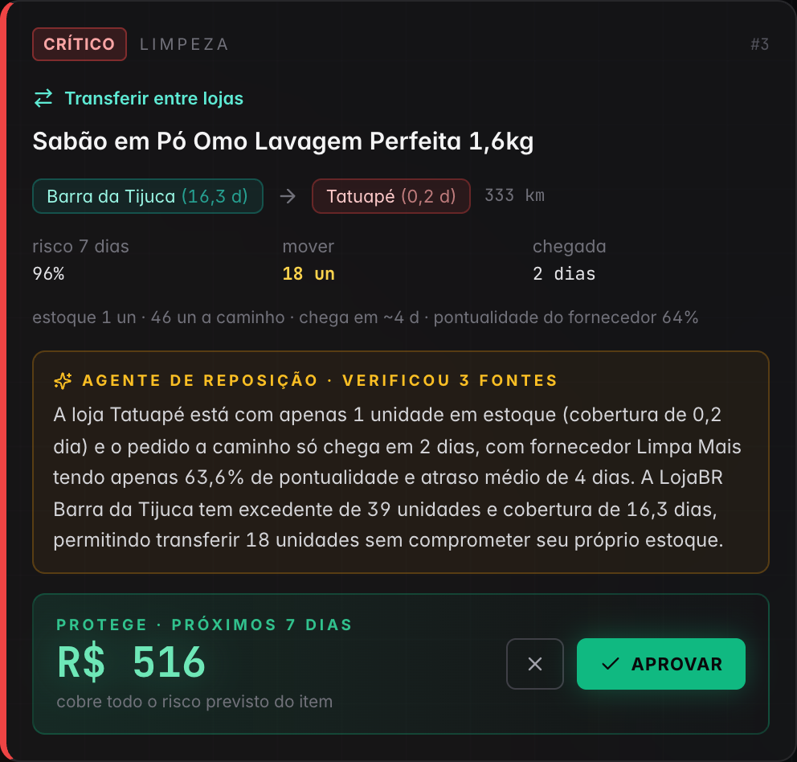
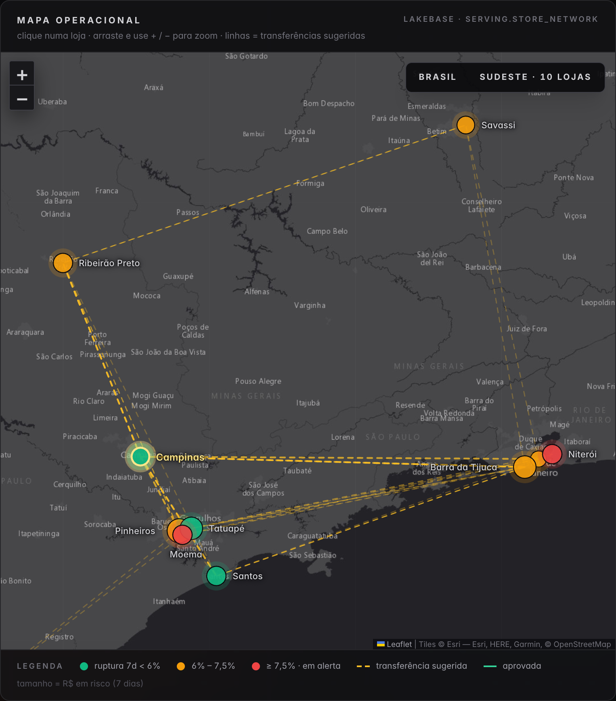

Recuperar até R$ 0,8 mi por ano em vendas que hoje somem da gôndola
O Centro de Abastecimento avisa 2,9 dias antes que um item vai faltar. A ação mais barata para cada caso chega pronta, e o gerente de reposição aprova em um clique.
hoje
4,1%
da venda se perde por ruptura: R$ 2,39 mi/ano nos itens de maior giro
na rede
~R$ 1,4 mi
recuperáveis a cada R$ 100 mi de venda (⅓ da perda)
o pedido
30 dias
piloto em 4 lojas, com 4 lojas de controle
De onde vêm os números: um protótipo que já roda na Databricks, sobre o histórico de 120 dias das 20 lojas, nos 129 itens de maior giro. O piloto mede o resultado na operação das lojas.
para VP de Operações & Supply Chain · Gerente de Reposição
01
Resumo executivo
A resposta em uma página
O problema
Nos 129 itens de maior giro das 20 lojas, 4,1% da venda some por ruptura: R$ 2,39 mi por ano, em linha com os ~4% do varejo. O time descobre depois que a gôndola esvaziou.
A solução
Um modelo aponta quais itens vão faltar nos próximos 7 dias. Um agente de IA confere os fatos e propõe a ação mais barata: transferir, antecipar ou pedido urgente. O gerente aprova em um clique. Tudo numa única plataforma, a Databricks.
O valor
Até ⅓ da perda recuperada: R$ 0,4 a 0,8 mi por ano nesses itens, conforme a execução; R$ 0,7 a 1,4 mi a cada R$ 100 mi de venda. Custo medido da plataforma: ~US$ 440 por mês, a preço de lista.
O pedido
Piloto de 30 dias em 4 lojas, com 4 lojas de controle. A decisão de escalar sai dos números da própria LojaBR, não de uma projeção.
02
O problema, em reais · últimos 120 dias
Produto fora da gôndola é venda que vai para o concorrente
venda perdida
4,1%
da venda, por ruptura
por ano
R$ 2,39 mi
20 lojas × 129 itens
disponibilidade · 7 dias
93,5%
ruptura de 6,5% (loja × item × dia)
pior fornecedor
63%
das entregas no prazo
Histórico de 120 dias de vendas, estoque e pedidos das 20 lojas, nos 129 itens de maior giro.
ruptura por categoria · 120 dias · média da rede 5,3%
Limpeza11,3%
Higiene9,2%
Congelados8,1%
Mercearia5,2%
Bebidas4,5%
Laticínios4,2%
Hortifruti1,2%
Padaria0,6%
A perda é concentrada: Limpeza e Higiene rompem ~2× a média. Os fornecedores dessas categorias entregam no prazo só 63% e 68% das vezes.
03
Os KPIs do comprador
O que muda nos números que a LojaBR já acompanha
KPI
Hoje
Com o Centro · 50% a 100% executado
Quem acompanha
Disponibilidade em gôndola
93,5%
94,7% a 95,8%
VP de Operações
Taxa de ruptura (loja × item × dia)
6,5%
5,3% a 4,2%
VP e gerente
Venda perdida por ruptura
4,1% · R$ 2,39 mi/ano
−18% a −35% · R$ 0,42 a 0,84 mi/ano de volta
VP e financeiro
Aviso antes de a gôndola esvaziar
nenhum (reativo)
~2,9 dias · 75% com ≥ 2 dias
Gerente de reposição
Itens para revisar por dia
29% do sortimento · 38% de acerto
8% · 84% de acerto
Gerente de reposição
As faixas vão de 50% a 100% das ações executadas no prazo (slide 9). Premissa: a ruptura cai na mesma proporção da venda recuperada. Regra de bolso: a cada R$ 100 mi de venda, ~R$ 4 mi se perdem em ruptura; recuperar um terço vale ~R$ 1,4 mi.
04
Valor para quem patrocina e para quem opera
O que muda para cada um
patrocinadorVP de Operações & Supply Chain
Venda de volta no P&L: R$ 0,42 a 0,84 mi/ano nos itens de maior giro, ~R$ 1,4 mi a cada R$ 100 mi de venda.
O valor sai barato: 80% dele vem de antecipar pedidos que já estão a caminho, sem compra nova nem frete.
Risco sob controle: quem decide é o gerente, e cada decisão fica registrada com autor e horário.
Custo medido: ~US$ 440 por mês para rodar tudo, a preço de lista.
dono do domínioGerente de Reposição
Uma lista curta: 8% dos itens, 3,6× menos que a regra atual, ordenada por R$ ou por criticidade.
2,9 dias de aviso: tempo de transferir ou antecipar o pedido, em vez de apagar incêndio.
A justificativa pronta: estoque, loja doadora e pontualidade do fornecedor no próprio card.
Um clique aprova, e as perguntas sobre os dados vão ao Genie, em português, sem abrir chamado.
05
O que o gerente vê de manhã
Uma fila de ação, não um relatório
1
Abre a fila às 7h. Todas as ações do dia, ordenadas por R$ protegido ou pelo que esvazia primeiro.
2
Lê o card. Produto, loja, a ação mais barata, a justificativa do agente e o R$ em jogo.
3
Aprova com um clique. A decisão fica registrada com o nome dele, e o "R$ protegido hoje" sobe na tela.
Transferir de uma loja próxima com excesso
Antecipar o pedido que já está a caminho
Pedido urgente quando não há alternativa

tela do app
06
Onde agir primeiro

tela do app · zoom no Sudeste
Estoque parado numa loja resolve a falta na outra
39 transferências sugeridas num único dia, com o excesso de outras lojas.
Só a até 450 km, sem deixar a doadora com menos de 10 dias de estoque, e chegando em 1 a 2 dias.
O mapa mostra a ruptura por loja e as rotas. Um clique abre a loja e as ações dela.
quando a transferência compensa
Cada transferência protege, em média, R$ 74. Ela só compensa se o frete marginal custar menos que isso. Por isso, no piloto, transferimos só em rotas que já existem, como a entrega do CD, ou agrupando os itens do mesmo par de lojas.
As transferências são 18% do valor. A maior parte (80%) vem de antecipar pedidos que já estão a caminho.
07
Por que confiar no alerta
O modelo acerta mais que o dobro da regra atual
acerto · lista diária
84%
contra 38% da regra "cobertura < prazo de entrega"
antecedência
2,9 dias
3.691 alertas corretos no teste; 75% com ≥ 2 dias
AUC
0,85
validado em 49.733 casos de 4 semanas que o modelo não viu
tamanho da lista
8%
dos itens em gôndola, contra 29% da regra
e quando ele erra?
Um alerta errado não vira perda. A doadora continua com ao menos 10 dias de estoque, e o item transferido vende na loja de destino. O prejuízo máximo é o frete, e por isso a regra de rota do slide 7.
como ele se mantém bom
O modelo é re-treinado todo dia no mesmo job, com uma nova versão registrada no Unity Catalog. O agente consulta estoque, lojas vizinhas e fornecedor antes de recomendar, e o sistema rejeita qualquer decisão tomada antes dessa consulta.
Premissas: valor esperado (ponderado pelo risco), não garantido; base na fila do run de 28/09 (R$ 16,2 mil em 7 dias, ≈ 27% da perda da semana anterior); só os itens de maior giro; frete das transferências fora da conta, por isso a regra de rota.
09
Como funciona · uma plataforma
Do dado bruto à decisão, num único job diário
visão de arquitetura do app · cada estágio abre no workspace
um job, todo dia às 06:00
Com o dado até ontem, a fila fica pronta antes de a loja abrir. Ingestão, qualidade, modelo, agente e publicação rodam juntos em 8,4 min.
governado no Unity Catalog
Linhagem de cada número, 7 regras de qualidade (0 falhas no último run) e acesso mínimo para o app.
sem cópia, sem planilha
O mesmo dado alimenta o app, o Genie e o modelo. Cada estágio abre no workspace direto do app.
Todo número deste deck é rastreável: vem do run de evidência de 28/09/2026 e das tabelas de billing do workspace. Os notebooks executados, com as saídas, e as consultas de custo estão em texto no repositório (evidence/).
10
Por que Databricks
O que a plataforma muda no resultado
Com ferramentas separadas
Com Databricks
Integração
ETL, data warehouse, ML, banco operacional, LLM, BI e hospedagem do app: 7 peças para integrar e manter
Uma plataforma: Lakeflow, Unity Catalog, MLflow, Foundation Model API, Lakebase, Genie e Apps
O número
Cópias entre sistemas; o R$ do app nem sempre bate com o do relatório
Um dado governado: o app, o Genie e o modelo leem o mesmo número, com linhagem
Tempo até o piloto
Meses de integração e uma revisão de segurança por ferramenta
O protótipo já roda ponta a ponta; o piloto leva 30 dias
Segurança
Permissões e auditoria espalhadas em cada ferramenta
Um lugar só: quem vê o quê, e quem aprovou cada ação
Custo
Licenças e infraestrutura fixas, rodando ou não
Medido: ~US$ 440 por mês a preço de lista; a jornada em lote custa US$ 0,52 por dia
Saída
Formatos fechados; migrar é um projeto
Formatos abertos: tabelas Delta (e Iceberg via UniForm), Postgres padrão, MLflow e código em Git
Os mesmos dados já servem os próximos casos:previsão de demandamarkdown do excesso de estoquesortimento por loja
11
Plano de piloto · 30 dias
Risco controlado, resultado medido
Quando
O que acontece
Como medimos
Semana 1
Conectar vendas, estoque e pedidos das 4 lojas-piloto; integrar a aprovação ao ERP
dados chegando todo dia, qualidade ≥ 99%
Semanas 2–4
Fila de ação nas 4 lojas; 4 lojas parecidas como controle
ruptura e venda perdida, piloto contra controle
Fim
Decisão de escalar
R$ recuperado por loja, comparado ao custo
critério de sucesso
Ruptura acumulada das semanas 2–4 ≥ 1,5 p.p. abaixo do controle, e R$ recuperado maior que o custo.
escolha das lojas
4 lojas com ruptura acima da média, em 2 regiões e 2 formatos. O controle é pareado por formato, região e ruptura e vive o mesmo mês, então sazonalidade e promoções se anulam.
riscos e mitigação
Modelo errar: o gerente decide. Adoção: um clique, na rotina da manhã. Frete: só rota existente. Dado de fornecedor incompleto: a regra cobre.
12
O pedido
Patrocinar um piloto de 30 dias em 4 lojas, com grupo de controle.
Medir ruptura e venda recuperada nas lojas, e decidir a escala com base nesses números. A plataforma custa ~US$ 440 por mês a preço de lista.
semana 0 · patrocinador
Escolher as 4 lojas-piloto e as 4 de controle.
semana 1 · TI LojaBR + Databricks
Liberar os feeds de vendas, estoque e pedidos, e a integração da aprovação com o ERP.
semana 4 · comitê
Decidir a escala com o resultado medido na mão.
github.com/vitor-bricks/fe-bar-varejo
13
Apêndice · para o time técnico
O que está por trás de cada número
Lakeflow Declarative Pipelines: Auto Loader em 7 feeds brutos; medallion com 7 expectativas de qualidade, 0 falhas no último run.
Modelo: gradient boosting com features point-in-time (pedido em aberto com a chegada prevista, não a real). Treino em 153 mil casos e teste em 49,7 mil de datas posteriores; AUC 0,85; re-treinado e registrado no Unity Catalog a cada run.
Agente: tool-calling na Foundation Model API; consulta 3 ferramentas, e o sistema rejeita decisão sem consulta prévia.
Lakebase: schema serving publicado de forma atômica e schema app com aprovações, rejeições e log do Genie; leitura em ~3 ms.
Genie: entity matching, definições de métrica e 5 SQL certificados.
App: React + TypeScript / FastAPI; service principal com acesso mínimo; login pelo SSO do workspace.
Evidência em texto: notebooks executados com saídas, resultados de qualidade, respostas do Genie e do app, e consultas de custo em evidence/.
github.com/vitor-bricks/fe-bar-varejo
A1
Apêndice · custo medido e operação
Quanto custa rodar, e como se opera
Componente
Consumo em 29/09
US$/dia
Job serverless (4 tarefas)
0,35 DBU
0,16
Pipeline Lakeflow
0,39 DBU
0,17
Agente (LLM, 24 chamadas)
2,72 DBU
0,19
Lakebase (escala até zero)
5,11 DBU
2,66
App (sempre ligado)
12 DBU
11,40
Total
~US$ 440 / 30 dias
14,58
Fonte: system.billing.usage × list_prices, num dia só com o run agendado. O app é 78% do custo e pode ser desligado fora do horário. Descontos contratuais reduzem esses valores.
Latência: lote diário às 06:00 com o dado até ontem. Um aviso de 2,9 dias cabe num lote diário, e o Auto Loader pode rodar ao longo do dia se precisar.
Re-treino e feedback: o modelo é re-treinado todo dia. Aprovações e rejeições ficam gravadas com autor e viram sinal de avaliação no piloto.
Escala: o compute é serverless. No piloto, medimos tempo e custo com o sortimento completo das 4 lojas.
Segurança: permissões por papel no Unity Catalog, app com acesso mínimo e toda decisão auditável.